実データの判定
正常期間で決めた管理限界を、それより後の計測に当てます。どの手法がどの計測で警報を出したか、M3S では警報が出ずにほかの手法で警報が出た計測はどれかを一覧にします。
Operating Guide · Internal Use
Alignment・Overlay の計測データ（Excel・CSV）を読み込み、画面で設定を選んで、異常検知の手法を同じ誤報率にそろえて比べるアプリの使い方です。 入手と起動から、結果の見方と保存までを順に説明します。
Overview
このアプリは、模擬データで行った検証（技術レポート「Wafer 面内傾向の異常検知手法の比較」）を、実データで行うためのものです。 M3S・多項式係数 SPC・Mahalanobis 距離・PCA T²／SPE・GPR 残差・EWMA・CUSUM・OR 統合を、同じ誤報率にそろえて比べます。 計算の中身は検証と同じプログラムです。
正常期間で決めた管理限界を、それより後の計測に当てます。どの手法がどの計測で警報を出したか、M3S では警報が出ずにほかの手法で警報が出た計測はどれかを一覧にします。
異常と分かっている Wafer の印（ラベル）の列があれば、手法ごとに何件見つけたか、見分ける力（ROC-AUC）を出します。
正常な Wafer に、検証と同じ形の異常（Radial・局所・単一 Shot など）を足して、検出率と、気づくまでの枚数を比べます。
データはこのパソコンの中だけで処理し、インターネットには送りません。
Prerequisites
Wafer・Xmm・Ymm・markXmm・markYmm・measX・measY の列がある Excel（.xlsx・.xlsm）か CSV です（6-1. 読み込めるデータの形）。読み込むデータと保存した結果には、社内の計測値が含まれます。社外のサービス（クラウドの AI、個人のメール、ファイル共有サービスなど）に送らないでください。 アプリのリポジトリ（GitHub で公開しています）のフォルダにも保存しないでください。 実行ファイル版は署名のないアプリです。会社の PC で使う前に、情報システムの担当に実行してよいか確認してください。
Workflow
画面上の「1. データ」「2. 設定」「3. 結果」のタブを左から順に進めます。前のタブが終わるまで、次のタブは押せません。 初めてのときは、練習用の模擬データで一度通して試すと流れが分かります（5 分ほど）。
この手順書の画像は、Mac で練習用の模擬データを読み込んで撮影したものです。Windows では窓の枠や文字の形が少し違いますが、配置は同じです。 メニュー（ファイル・表示・ヘルプ）は、Mac では画面のいちばん上、Windows では窓の上にあります。
Install & Start
| 起動のしかた | Windows | Mac | 必要なもの |
|---|---|---|---|
| 実行ファイル版 | WaferMonitorValidator.exe | WaferMonitorValidator.app | なし（Python は不要） |
| Python 版 | start_windows.bat | start_mac.command | Python 3.14。初回だけインターネット |
リポジトリ https://github.com/rsakamoto-0824/wafer_anomaly_monitoring の上の［Actions］を押し、左の一覧で［実データ検証アプリ（Windows・Mac）］を選びます。
緑のチェックが付いた、いちばん上（新しい）の実行を開きます。
画面の下の［Artifacts］で、Windows は WaferMonitorValidator-Windows、Mac は WaferMonitorValidator-Mac を押します（GitHub へのログインが必要です）。
保存期間は 14 日です。期限が切れていたら、同じ画面の［Run workflow］で作り直すか、4-4 の方法で自分で作ります。
Mac 用は Apple シリコン（M1 以降）の Mac 用です。
Windows：ZIP を右クリック →［すべて展開］。できたフォルダ（中に WaferMonitorValidator.exe と _internal フォルダがある）を、フォルダごと C:\work などに置きます。exe だけを取り出すと動きません。
Mac：ダウンロードした ZIP を開くと、中にもう 1 つ WaferMonitorValidator-Mac.zip があります。それも開くと WaferMonitorValidator.app ができるので、「アプリケーション」などに置きます。
WaferMonitorValidator.exe（Mac は WaferMonitorValidator.app）をダブルクリックします。
初めての起動は、図の文字の準備に 10〜30 秒かかります。2 回目からは早くなります。
https://www.python.org/downloads/ から Python 3.14 を入れます。Windows では、インストールの最初の画面で「Add python.exe to PATH」にチェックを入れます。
GitHub の［Code］→［Download ZIP］で取得して展開するか、git clone します。
realdata_validator フォルダの start_windows.bat（Mac は start_mac.command）をダブルクリックします。
初回だけ、このフォルダに専用の Python 環境（.venv）を作ってライブラリを入れます（数分。インターネットが必要）。2 回目からはすぐに起動します。
コマンドで起動する場合（リポジトリのフォルダで実行）：
realdata_validator\.venv\Scripts\python.exe realdata_validator\run_app.pyrealdata_validator/.venv/bin/python realdata_validator/run_app.py
Python 3.14 を入れた PC で、realdata_validator フォルダの build_windows.bat（Mac は build_mac.command）をダブルクリックします。
テスト → 実行ファイルの作成 → できた実行ファイルでの自己診断を順に行い、Windows は dist\WaferMonitorValidator\、Mac は dist/WaferMonitorValidator.app ができます（初回は 10 分ほど）。
実行ファイルは、作った OS 用のものしか作れません。Windows 用は Windows で、Mac 用は Mac で作ります。
Practice
小さな画面が開きます。
形式は CSV（速い）がおすすめです。Lot の数の既定は 24（600 枚）です。Excel は大きいと作るのに時間がかかります。
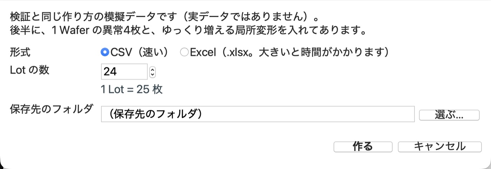
そのまま「1. データ」の画面に読み込まれます。続きは 6. データを読み込む と同じです。
検証と同じ作り方の模擬データです（実データではありません）。後半に 1 Wafer の異常 4 枚（局所変形・単一 Shot・高次・Radial。列「既知の異常」が 1）と、
最後の約 2 割にゆっくり増える局所変形が入っています。入れた異常の一覧（…_入れた異常.csv）も同じフォルダにできるので、結果と照らし合わせられます。
未測定（Sts = −1、計測値は 0）や重複行も少し入っているので、前処理の確認にも使えます。
Step 1 · Data
Excel に複数のシートがあれば「シート（Excel のとき）」で選び直せます。読み込み中は窓の下に表示が出ます（Excel は進み具合の棒も出ます）。 「ファイルの中身（先頭 100 行）」で、思ったファイルかを確かめます。
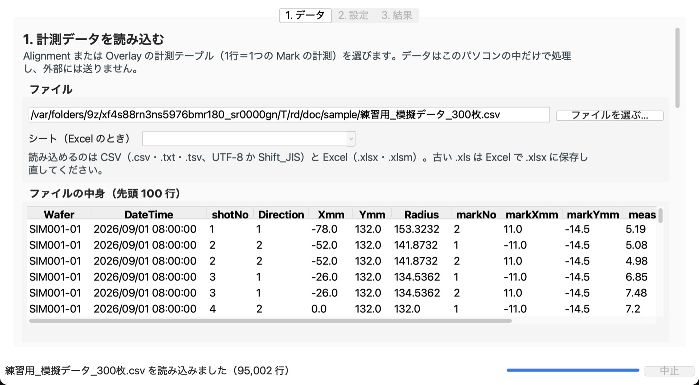
標準と同じ名前の列は自動で選ばれます。名前が違うときは、右のリストからファイルの列を選び直します。 「（必須）」の 7 項目は必ず選びます。ファイルにない項目は「（なし）」のままで構いません。
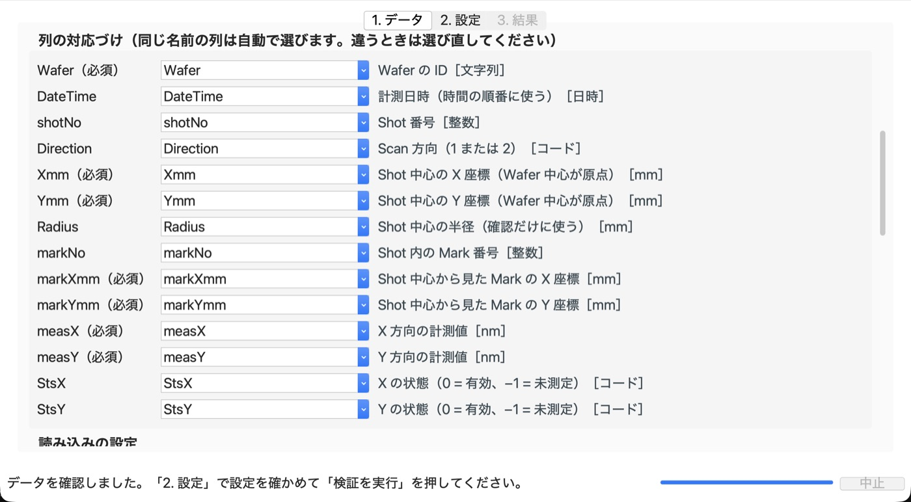
計測値の単位（nm か µm）、有効半径（既定 150 mm。半径がこれより小さい点だけを使う）、Wafer の半径（300 mm Wafer は 150）、 座標の丸め幅、同じ Wafer の計測が複数あるときの扱い（すべて使う／最後の計測だけ使う）です。ふつうは既定のままで構いません。
絞り込み：製品・工程・装置などが 1 つのファイルに混ざっているときに、列を選んで残す値を選びます。
既知の異常のラベル：異常と分かっている Wafer の印の列（例 1／0、NG／OK）を選び、「異常」を表す値を選びます。1・NG・異常 などは自動で選ばれます。
ラベルで異常とされた計測は、正常のモデルの学習と管理限界の決定に使いません。
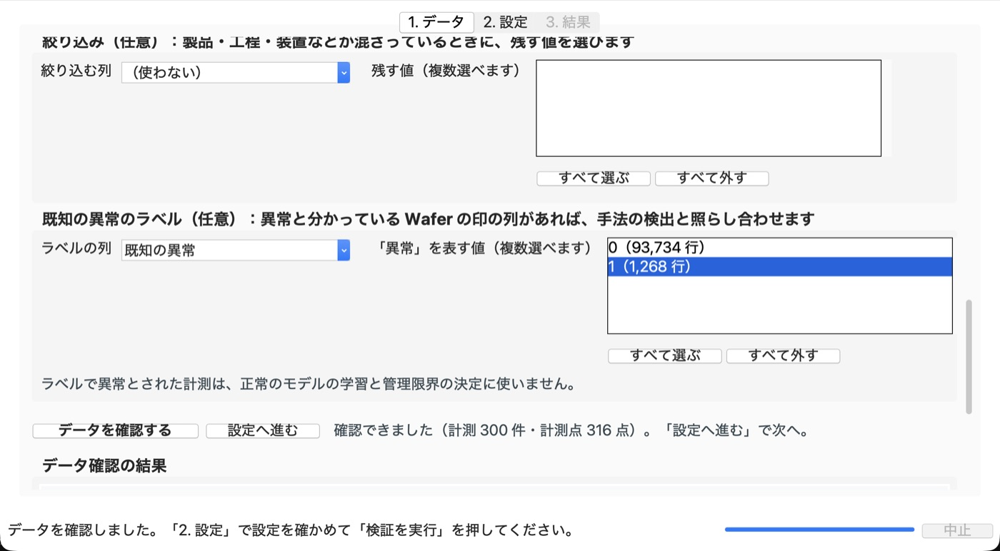
下の「データ確認の結果」に、使った行の数、未測定の数、重複行の数、Radius の確認、計測の件数、計測点の数、計測日時の範囲が出ます。 注意があれば最後に「注意：」で出ます。件数が思ったとおりなら［設定へ進む］を押します。
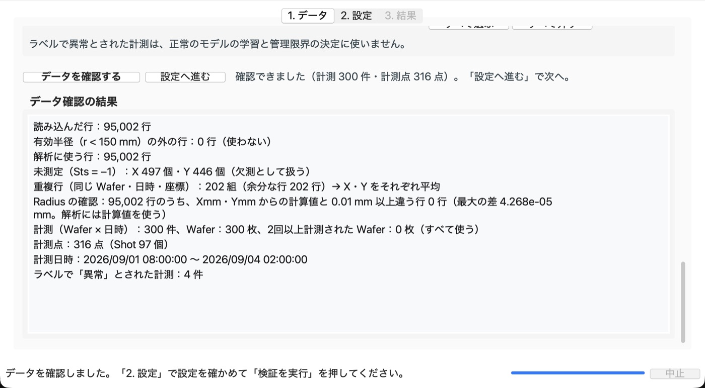
列の対応づけや読み込みの設定を変えたときは、もう一度［データを確認する］を押します（押すまで「2. 設定」に進めません）。
1 行が 1 つの Mark の計測で、次の列がある表です（標準の項目名。大文字・小文字も同じにします）。
| 項目名 | 意味 | 単位・型 | 必須 |
|---|---|---|---|
Wafer | Wafer の ID | 文字列 | 必須 |
DateTime | 計測日時（時間の順番に使う） | 日時 | |
shotNo | Shot 番号 | 整数 | |
Direction | Scan 方向（1・2）。ないと Scan 方向の異常（B8）の注入試験はできない | コード | |
Xmm・Ymm | Shot 中心の座標（Wafer 中心が原点） | mm | 必須 |
Radius | Shot 中心の半径（確認だけに使う） | mm | |
markNo | Shot 内の Mark 番号 | 整数 | |
markXmm・markYmm | Shot 中心から見た Mark の座標 | mm | 必須 |
measX・measY | X・Y 方向の計測値 | nm（µm も選べる） | 必須 |
StsX・StsY | 状態（0 = 有効、−1 = 未測定） | コード |
CSV は UTF-8 と Shift_JIS（日本語版 Excel の「CSV（コンマ区切り）」）のどちらでも読めます。古い Excel（.xls）は、Excel で .xlsx に保存し直してください。
StsX = 0 の measX、Y には StsY = 0 の measY だけを使います。未測定（−1）などは欠測にし、ゼロとしては扱いません。x = Xmm + markXmm、y = Ymm + markYmm です。半径が有効半径より小さい点だけを使います（150 mm ちょうどの点は使いません）。Wafer・DateTime・座標が同じ行は重複とみなし、X・Y をそれぞれ平均します。Radius があれば、Xmm・Ymm から計算した値と合っているかを確かめます（解析には計算した値を使います）。-2 が -10 より前）です。DateTime がなければファイルの行の順です。Step 2 · Settings
既定の値は、模擬データの検証と同じです。分からない項目はそのままで構いません。設定が終わったら、画面の右下の［検証を実行］を押します（8. 検証を実行する）。
正常期間（異常がないと考えられる期間）を、先頭からの割合・先頭からの件数・日時のどれかで決めます（既定は先頭から 50%）。 正常期間の前半（既定 50%）で正常のモデルを学習し、後半（校正）で管理限界を決め、正常期間より後を評価します。 欄の下の「見込み」に件数が出ます。校正の件数が少ないと、赤い字で注意が出ます。
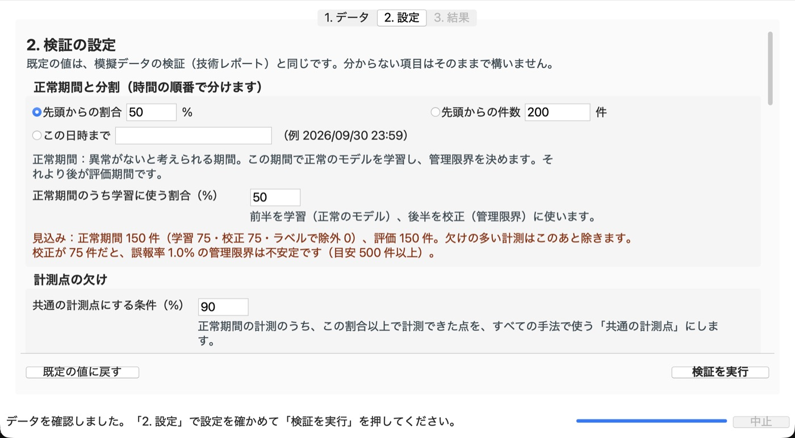
すべての手法で同じ点を使うため、正常期間の計測の 90% 以上で計測できた点を「共通の計測点」にします。 共通の計測点の 20% より多く欠けている計測は解析から除き、残りの欠けは正常のモデルで補います（補った値は M3S には使いません）。
誤報率は「正常な Wafer で警報が出る割合」で、すべての手法をこの値にそろえます（既定 1%）。 校正の件数 × 誤報率が 5 件以上あると管理限界が安定します（1% なら校正 500 件、5% なら 100 件）。
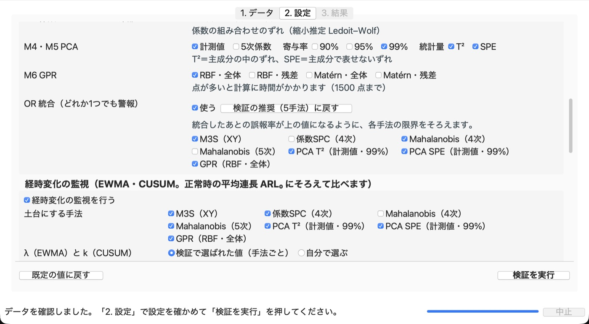
| 手法 | 見ているもの | 検証で得意だった異常 |
|---|---|---|
| M1 M3S | X・Y それぞれの |平均| + 3σ | Radial など、正常のばらつきと同じ向きの大きな変化 |
| M2 多項式係数の SPC | 多項式の係数ごとの管理図 | 特定の係数の変化（どの成分かが分かりやすい） |
| M3 Mahalanobis 距離 | 係数の組み合わせ | 係数の異常な組み合わせ、平均・σ が同じまま形が変わる異常 |
| M4 PCA T² | 主成分の中のずれ | 全体の平均の検出率が高い |
| M5 PCA SPE | 主成分で表せないずれ | 局所的な変形、単一 Shot |
| M6 GPR | 滑らかな個体差と計測誤差を分けたモデル | 局所的な変形、単一 Shot、高次 |
| OR 統合 | 選んだ手法のどれか 1 つでも警報（統合したあとの誤報率をそろえる） | 全体で最も高い検出率（既定は M3S・Mahalanobis 4 次・PCA T²・SPE・GPR） |
少しずつ進む変化を見る手法です。管理限界は、正常なときに最初の誤報が出るまでの平均の枚数 ARL₀（既定 370 枚）にそろえます。 EWMA の λ と CUSUM の k は、既定では検証で選ばれた値を手法ごとに使います（「自分で選ぶ」で変えられます）。 校正期間の Wafer をブロック（既定 25 枚＝1 Lot）ずつつないだ長い正常系列で管理限界を決めます。
1 Wafer の注入試験：校正期間の正常な Wafer に、異常の形（B1〜B10）を大きさ（σ_dir の倍数）ごとに足して、検出率を比べます。
σ_dir は「異常の形の向きでの、正常な Wafer のばらつき（標準偏差）」です。
経時変化の注入試験：正常な系列の途中から、成分（低次・高次・Radial・局所など）が Step や Ramp の形で変わったときに、気づくまでの枚数を比べます。
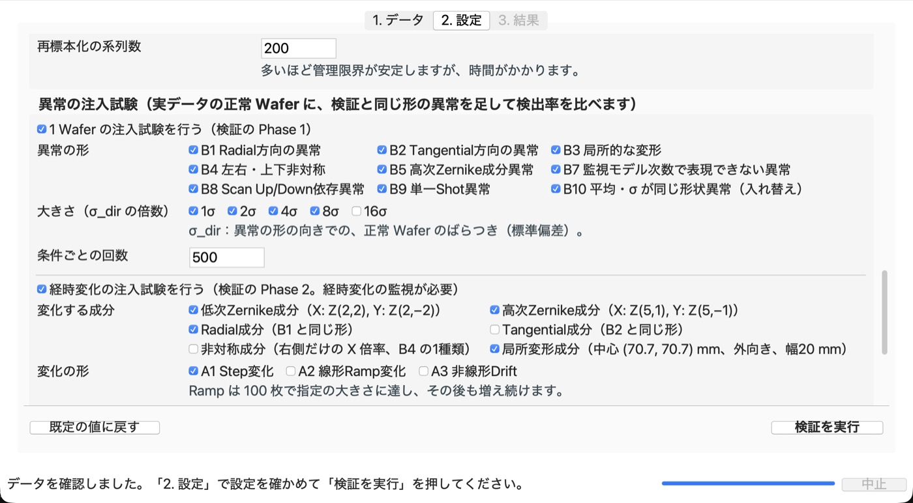
メニューの［ファイル］→［設定を保存…］で、列の対応づけを含む設定をファイル（JSON）に残せます。次回は［設定を読み込む…］で同じ設定に戻せます。［既定の値に戻す］で、いつでも既定に戻せます。
Step 3 · Run
窓の下に、今の処理と進み具合が出ます。設定に直すところがあれば、何をどう直すかが出ます。
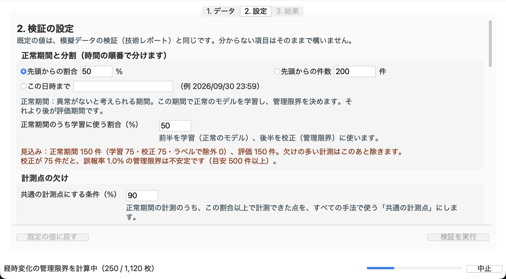
キーボードの Esc でも止められます。区切りのよいところで止まります（途中までの計算は残りません）。
窓の下に、かかった時間が出ます。
かかる時間の例（Apple M1 の Mac、既定の設定）：練習用データ 600 枚で 10〜20 秒、3,000 枚で 30 秒〜1 分です。 計測点・枚数・注入試験の回数が多いほど長くなります。GPR は計測点が多いと時間がかかります。
Step 4 · Results
「3. 結果」の中のタブで、見るものを切り替えます。窓を大きく（最大化）すると、図が大きく見やすくなります。
上の「要点」に、件数、手法ごとの警報の数、注入試験で最もよかった手法などが短い文で出ます。「注意」も必ず読んでください。 下の表は手法ごとの管理限界と警報の数です。「校正の警報率」は誤報率以下になります。「評価の警報で M3S は警報なし」は、M3S では見つからなかったものの数です。
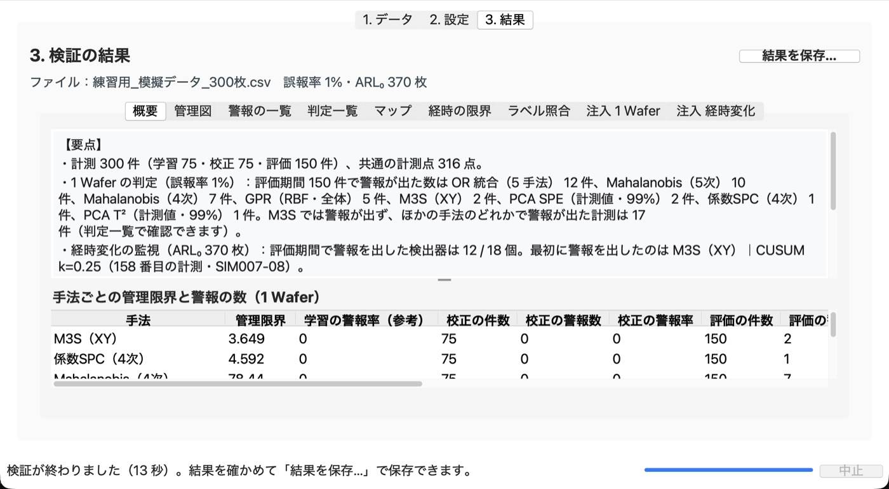
「手法」で選んだ手法のスコアを時間の順に並べた図です。灰色＝学習、水色＝校正、白＝評価の期間です。 赤い × が警報、▼ がラベルで異常の計測、破線が管理限界です。学習の期間は学習に使った Wafer なので、値が小さめに出ます。 「縦軸」で対数にもできます。図の上のボタンで拡大・移動・画像の保存ができます。
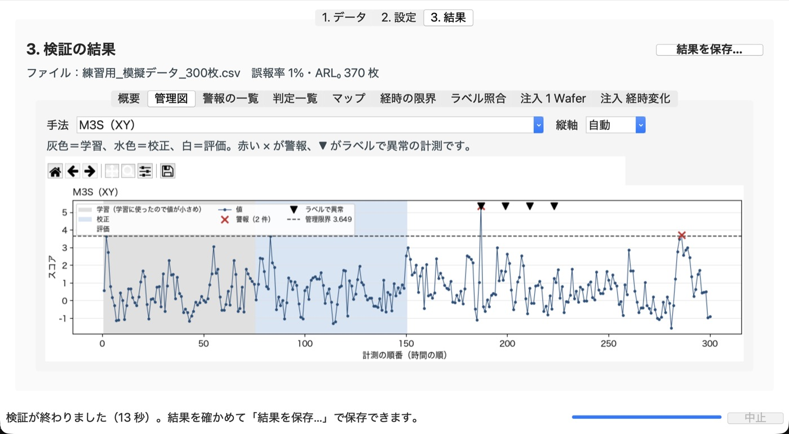
手法 × 計測で、警報が出たところに黒い印が付きます。赤い線から右が評価期間です。どの手法が同じ計測で警報を出しているかが一目で分かります。
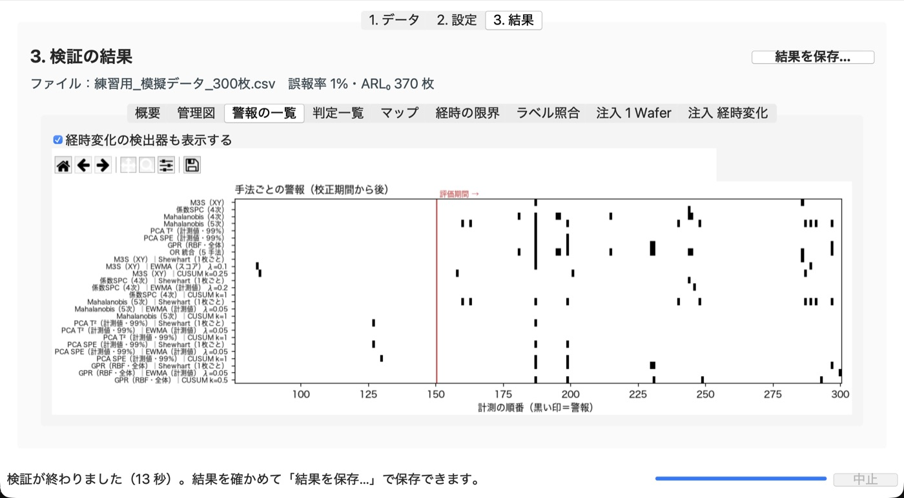
計測ごとの判定の表です。「警報が1つ以上ある計測だけ」「M3S は警報なし・ほかで警報あり の計測だけ」「評価期間だけ」で絞り込めます。 見出しを押すと並べ替えます。行をダブルクリック（または Enter）すると、その計測のマップを表示します。
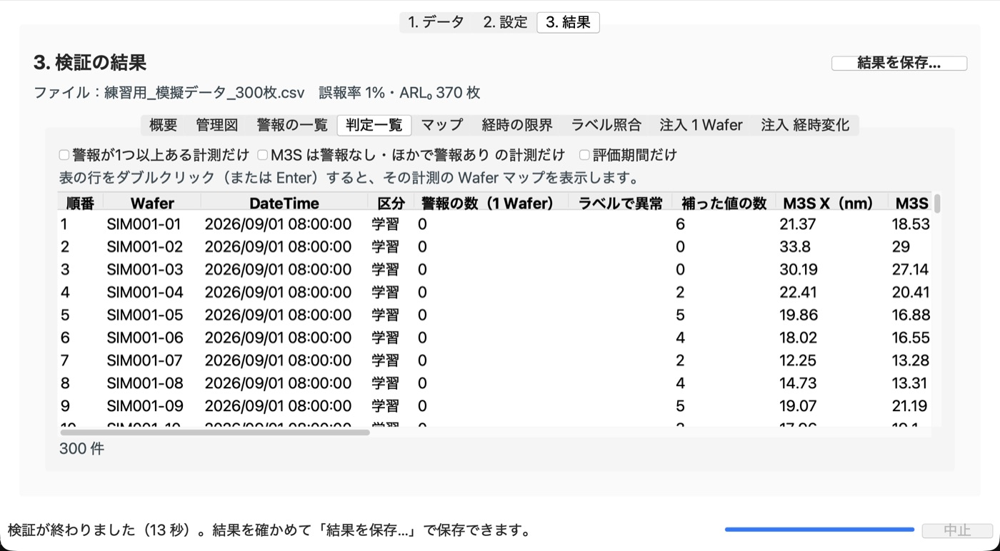
選んだ計測の Wafer 面内の矢印の図と、その計測の全手法の判定です。「表示」で、計測値・正常時の平均との差・PCA で表せない成分（SPE の中身）・GPR の残差を切り替えます。 左上の矢印が長さの目安（nm）、赤い白抜きの丸が補った点です。［前へ］［次へ］で前後の計測に移ります。
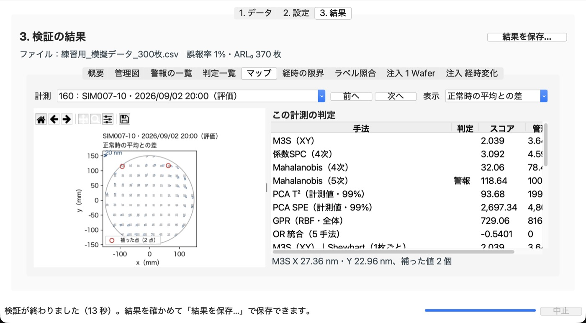
経時変化の検出器ごとの管理限界、再標本化で推定した ARL₀、校正期間と評価期間の警報の数、評価期間で最初の警報です。 校正の警報数は「件数 ÷ ARL₀」がおよその目安です。「管理限界の注意」に字があるものは、目標の ARL₀ にそろえられなかった検出器です（11）。
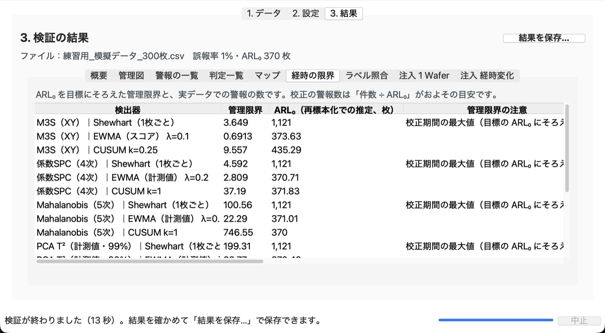
ラベルで異常の計測を何件見つけたか（検出率）、ラベルのない評価期間の計測で警報が出た割合、ROC-AUC（1 に近いほどよく見分けている）です。 ラベルのない計測には、まだ気づいていない異常が混じることがあります。
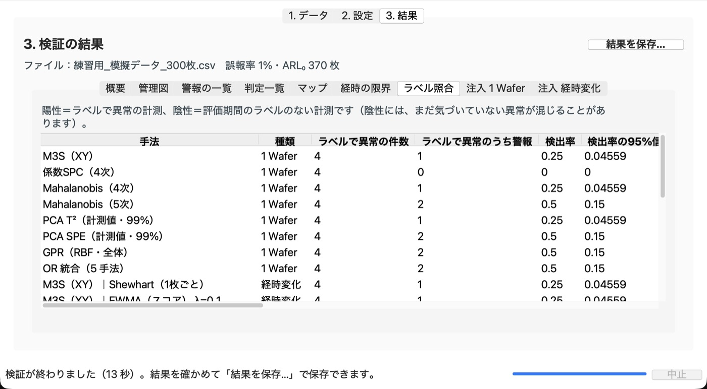
注入 1 Wafer：「図にするパターン」で異常の形を選ぶと、大きさごとの検出率を手法ごとに描きます（すべてのパターンを並べることもできます）。
「表（手法ごとのまとめ）」には、手法ごとの平均の検出率と、M3S の検出率が 10% 未満の条件での平均の検出率が出ます。
注入 経時変化：気づくまでの平均の枚数（RMST。短いほど早い）を、速い順に 10 個描きます。すべての検出器は「表」にあります。
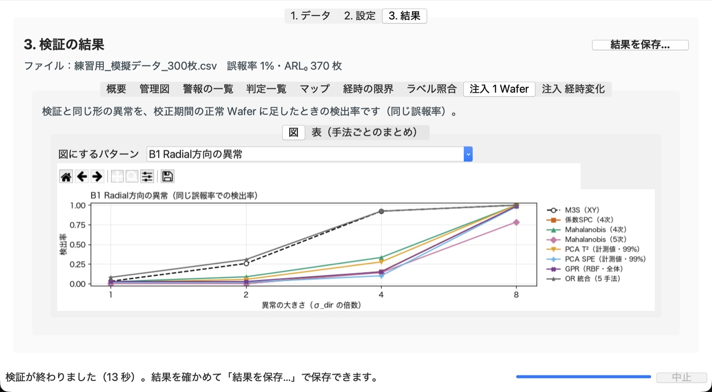
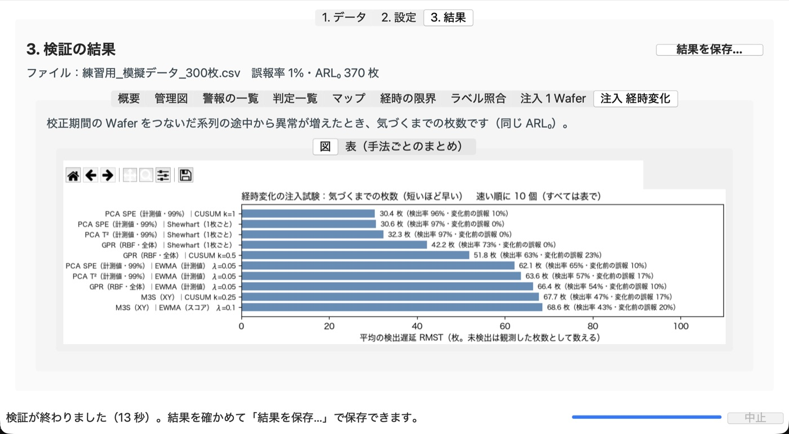
Step 5 · Save
選んだフォルダの中に 検証結果_年月日-時分秒 のフォルダを新しく作ります。すでにあるファイルは上書きしません。
保存したフォルダが開きます。
| ファイル | 中身 |
|---|---|
検証結果.xlsx | すべての表（概要、データ確認、手法と管理限界、判定、経時変化、ラベル照合、注入試験、除外した計測、共通の計測点）。値はアプリで計算した結果で、数式ではありません |
CSV/ | 同じ表の CSV（UTF-8・BOM 付き。Excel でそのまま開けます） |
図/ | 手法ごとの管理図、警報の一覧、注入試験の図（PNG） |
設定.json | このときの設定。［ファイル］→［設定を読み込む…］で同じ設定に戻せます |
このフォルダについて.txt | ファイルの説明 |
保存した結果には実データの値が含まれます。社内のデータを置いてよい場所に保存し、社外のサービスや公開の場所（このアプリのリポジトリを含む）には置かないでください。
Reading the results
Verification
Troubleshooting
署名のないアプリなので出ます。［詳細情報］→［実行］で起動できます。会社の PC で［実行］が出ないときは、社内の規則で止められています。情報システムの担当に相談するか、Python 版（4-3）を使ってください。
アプリを右クリック（control＋クリック）→［開く］→［開く］を押します。それでも開けないときは、［システム設定］→［プライバシーとセキュリティ］の［このまま開く］を押します。
python.org から Python 3.14 を入れてから、もう一度ダブルクリックします。インストールの最初の画面で「Add python.exe to PATH」にチェックを入れてください。
インターネットにつながっているか確かめ、realdata_validator フォルダの .venv フォルダを消してから、もう一度ダブルクリックします。会社のネットワークでライブラリを入れられないときは、実行ファイル版を使ってください。
メッセージの「対処」に従ってください（Python の版が古い、ライブラリが欠けている、など）。くわしい内容はログ（ホームフォルダの .wafer_monitor_validator/log.txt）にあります。
Excel でファイルを開き、［名前を付けて保存］で .xlsx か CSV（UTF-8）にしてから読み込みます。
Excel でファイルを開き、「CSV UTF-8（コンマ区切り）」で保存し直してから読み込みます。区切りがセミコロンなどの特殊な形のときも、この方法で直ります。
「列の対応づけ」で、（必須）の項目（Wafer・Xmm・Ymm・markXmm・markYmm・measX・measY）にファイルの列を選びます。同じ列を 2 つの項目に選ぶことはできません。
Wafer ごとに計測点の配置が違う（計測レシピが混ざっている）可能性があります。絞り込みで同じレシピのデータだけにするか、「共通の計測点にする条件」の割合を下げます。座標が少しずつ揺れて記録されているときは、「座標の丸め幅」を 0.01 mm などに広げます。
学習と校正に 20 件ずつ以上（合計 40 件以上）必要です。正常期間の割合・件数を増やすか、「計測を除く欠けの割合」をゆるめます。
校正の件数に対して誤報率が小さすぎます。誤報率を 5% にするか、正常期間を長くします。そのまま実行もできますが、結果の数値がぶれやすくなります（11）。
GPR は計測点が 1500 点を超えると計算が重すぎるので使いません。多項式は、計測点の数に対して次数が高すぎると係数を決められないので使いません。ほかの手法で比べてください。
数十万行を超える Excel は時間がかかります（進み具合は窓の下に出ます）。Excel で CSV に保存し直すと、ずっと早く読み込めます。
メニューの［表示］→［文字の大きさ］で「小さめ・標準・大きめ」を選べます。窓は画面の大きさに合わせて開きます。図を大きく見たいときは窓を最大化してください。
設定を見直してもう一度試します。続くときは、メニューの［ヘルプ］→［ログのフォルダを開く］で開く log.txt を開発者に渡してください。ログには計測値は含まれません。
このアプリの管理者へ、起きた日時・操作した画面・表示されたメッセージ・ログ（log.txt）を伝えてください。計測データそのものは送らないでください。